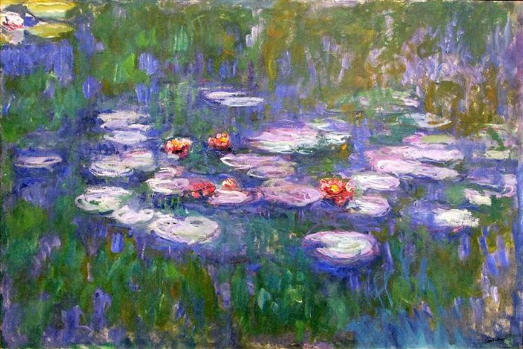
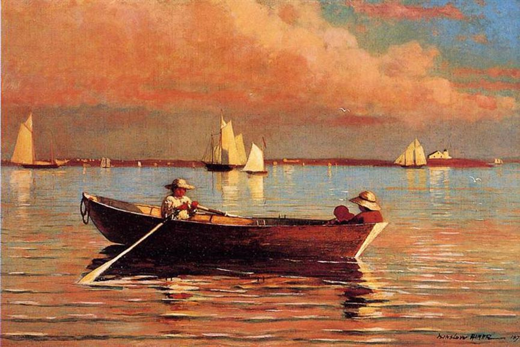
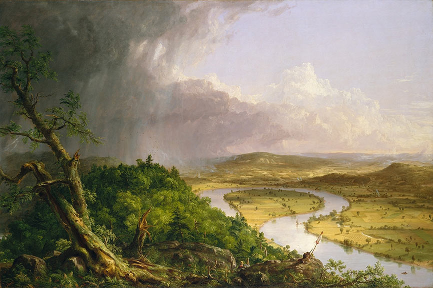

Water Lilies - Claude Monet
The famous French artist Claude Monet was one of the most celebrated
Impressionists whose nature paintings are well known in the history
of art. Investigating the shifting nature of light and the
perception of pure color, his paintings defined the Impressionistic
style. His famous Water Lilies series, along with his paintings
Haystacks and Le Dejeuner sur l'Herbe (inspired by Manet's
masterpiece), showcase the new technique – en plein air. Taking his
easel outside, Claude Monet was one of many Impressionist and
Post-Impressionist artists who promoted the direct contact to nature
and used it to develop new trends in painting.

Gloucester Harbor - Winslow Homer
The self-taught American artist Winslow Homer initially worked as a
commercial illustrator. Fascinated with nature, he began
investigating the traditional oil medium and soon became famous for
his landscape and marine subjects produced during his working
vacations. His nature painting Gloucester Harbor showcases the
beauty of color, the shifting light, and the serene atmosphere of
the vacation at the sea. Other nature-inspired paintings by the
artist include the Sunlight on the Coast, part of the collection of
the Ohio Toledo Museum of Art, Song of the Lark, and Cloud Shadows.

The Oxbow (The Connecticut River Near Northampton) - Thomas Cole
The American painter Thomas Cole is credited to be the founder of
the Hudson River School. The school was the base of the 19th-century
movement created by a number of landscape artists whose aesthetic
vision was influenced by Romanticism. This traditional period
promoted the wild and expressive qualities that nature held to
represent the setting for deeper philosophical themes. Cole was
famous for his realistic and beautiful paintings of America’s rugged
wilderness, as displayed in his Distant View of the Niagara Falls,
Home in the Woods, and The Oxbow. For many his paintings are a form
of allegorical art as they often hide themes which extend from the
mere nature depictions.